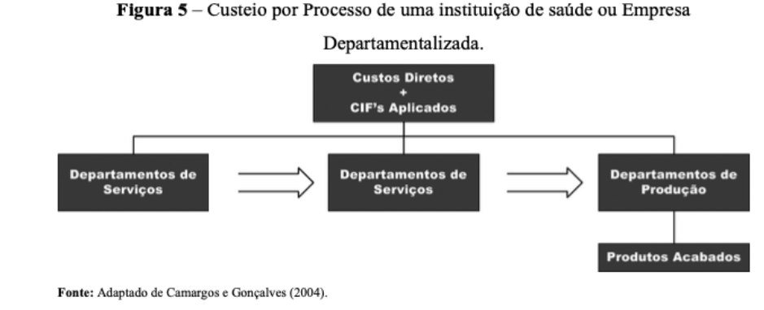
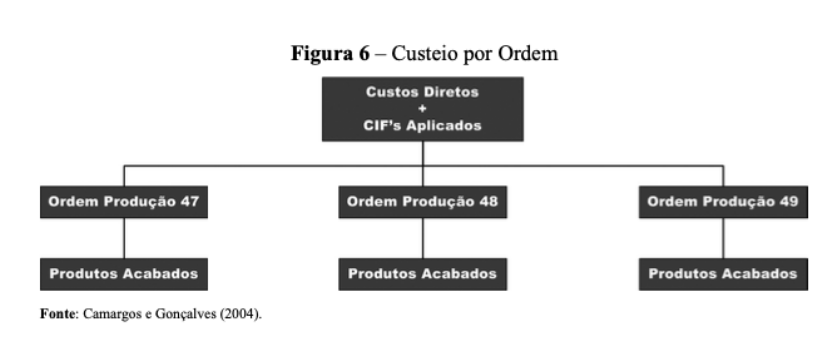

Os sistemas de acumulação de custos referem- se aos mecanismos utilizados nas sucessivas transferências de valores aos produtos ou serviços ofertados pelas instituições de saúde e outras empresas.
Os dois sistemas de acumulação de custos mais utilizados são:
1) Custeio por Processo → Indicado para empresas cuja produção seja caracterizada por homogeneidade, com processamento de produtos com as mesmas características e cuja contabilização dos custos é feita no final de determinado período. Para isso, os custos são acumulados em contas ou folhas representativas das diversas linhas de produção, que são encerradas sempre no final de cada período (semana, mês, trimestre, ano). A representação do custeio por processo está representada na Figura 5.
2) Custeio por Ordem (Específica, de Produção ou de Serviços) → Indicado para empresas cujos produtos processados são diferenciados e cuja contabilização dos custos é feita por produto ou por lotes de fabricação. Para isso, os custos são acumulados em contas ou folhas representativas das diversas linhas de produção, que são encerradas sempre no final da fabricação de determinada encomenda ou lote. A representação do custeio por ordem está apresentada na Figura 6.
